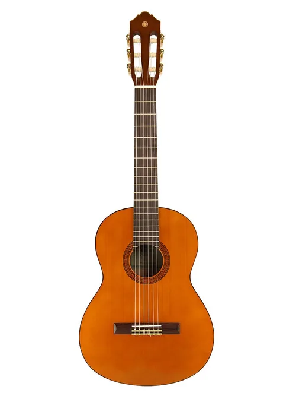
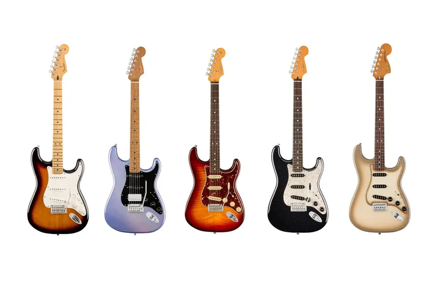

La musica es una de las formas en las que el arte se manifiesta, formando parte de todas las culturas de todo el mundo desde el inicio de la humanidad, expresa mensajes, sentimientos y muchas cosas mas. Ha ido evolucionando con la creacion de nuevos instrumentos, entre los cuales esta la guitarra, el instrumento popular mas accesible economicamente para las personas. Sin embargo tienen algunas variantes dirigidas a diferentes generos y tienen sus perifericos depediendo de los gustos de cada uno.
Este fue el primer tipo de guitarra que existio, aunque de una forma algo diferente a lo que solemos ver. Tiene cuerdas de nylon y se caracteriza por tener un sonido mas calido, melancolico y suave y es comunmente usado en la musica clasica, y otros generos como el Bossa Nova, el POP y muchos mas. se destacan marcas como:
La guitarra acustics se invento tiempo despues, tiene una forma un tanto diferente pero principalmente se diferencia por tener cuerdas de metal, consiguiendo un sonido mas brillante, metalico y con mas volumen y cuerpo. Son un poco mas caras que las guitarras clasicas y un poco mas dolorosas de tocar para los principiantes por lo que pocos principiantes optan por una acustica. Aun asi han sido de gran popularidad en generos como el Rock (mayormente siendo una guitarrade complemento), baladas, POP y mucho mas. Algunas marcas destacadas son:
Estas guitarras se inventaron mucho despues, como su nombre lo dice, necesitan de una fuente de energia electrica para funcionar, no tienen caja de resonancia por lo que su sonido es minimo al tocarla desconectada, necesita un amplificador para que su sonido salga a relucir. Tiene muchos tipos de sonido gracias a los pedales y ecualizacion del sonido que se puede hacer de varias formas, apta para casi todo tipo de genero, aunque entre guitarras electricas tambien existen subtipos que van enfocados especialmente a ciertos generos musicales. Algunas marcas destacadas son:
